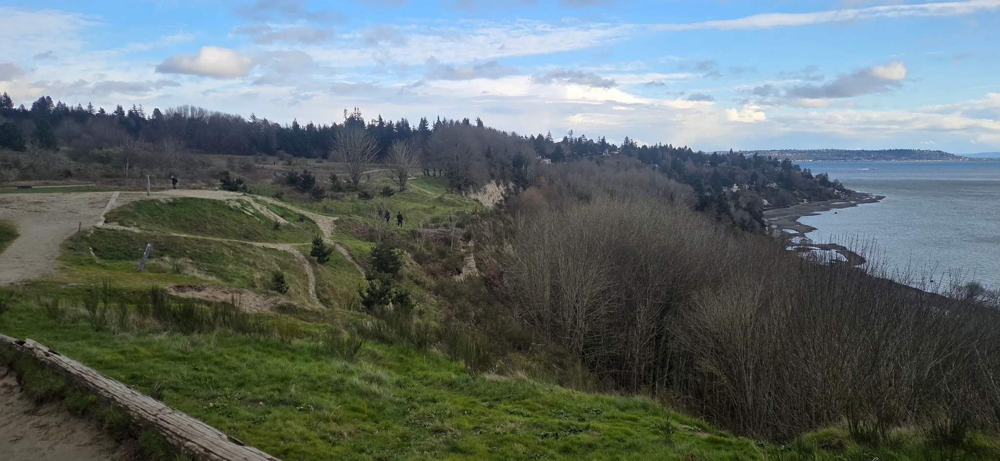
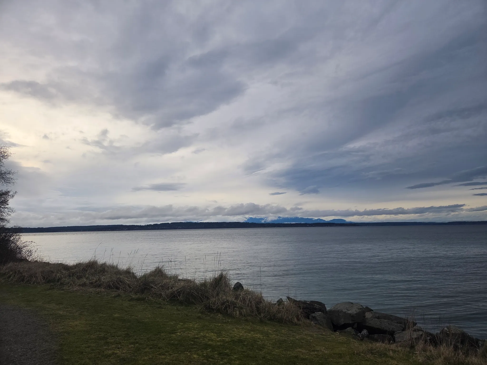
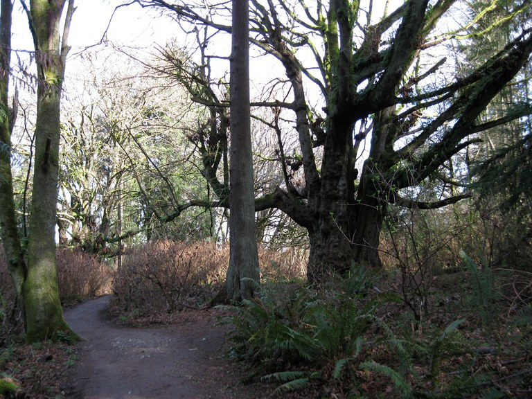

Discovery Park Loop
Location: 3801 Discovery Park Blvd., Seattle, WA 98199
Difficulty: Easy & kid friendly
Length: 2.8 miles roundtrip
Elevation: 140 feet
Discovery Park Loop is Seattle's largest park, occupying most of the former Fort Lawton site. Boasts spectacular views of the Cascade and Olympic Mountain ranges, and two miles of protected tidal beaches!
Tip: This park will be quite muddy in bad weather, and views will be obscured. Plan accordingly!